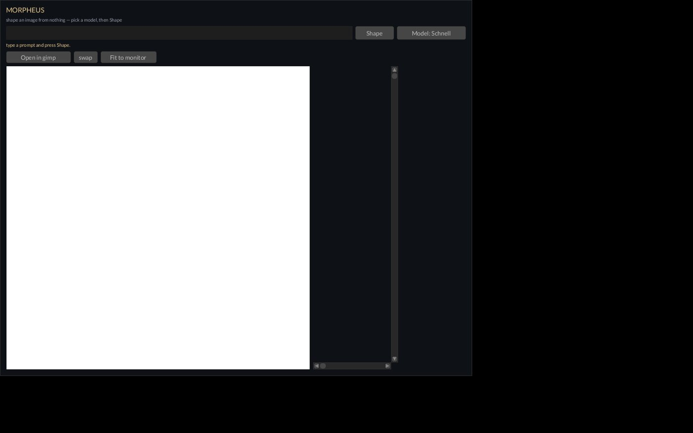
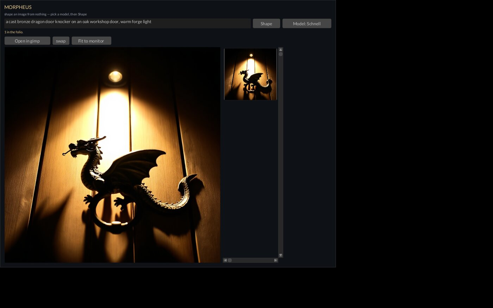

MORPHEUS
Image generation on your own iron. No queue, no account.


Morpheus — Operator Manual
Sovereign AI image generation. Type a prompt, get a 1024² render on canvas. Paired with the Leviathan Design Suite; licensed PolyForm Small Business.
Quickstart
cd ~/XOS/Morpheus && cargo run --release- Window opens on the workstation (Locutous holds the screen — nothing renders here).
- Type a prompt in the text box. Press Shape (or Enter).
- Status reads
shaping with <model> on Tiamat… (holds the GPU lease). Schnell lands in ~35s warm; first render after a cold keeper pays the model load. - The render fills the canvas and joins the folio strip on the right.
- Open in gimp (or whatever's current) hands the full-res PNG to an editor; swap cycles to the next installed editor. Fit to monitor opens a monitor-sized copy.
All GPU work runs remotely on Tiamat. The PNG comes back over the shared Hydra NFS mount — same path on every node.
What it is
A standalone Rust app (fyrox window + the image crate,
Kish-style — its own repo, not a Leviathan module). It is the image half
of "image + report for release": Morpheus makes the
picture, Kish makes the report. It made every Leviathan
module splash and the LEVIATHAN masthead.
No web tech. No Python UI. One binary, one window, remote GPU.
Why the name
Morpheus is the god of dreams — Greek morphē, "form". He shapes images out of nothing; so does this. Kin in the pantheon:
- Galatea — reserved for the video layer (still → motion), later.
- HADES — the Tiamat-side resident-model keeper
(
tools/sd-serve.sh, deployed astiamat:~/sd-serve). Decides which giant is awake in the vault; everything else sleeps until called. Command name stayssd-serve.
Features
- Canvas + folio — big canvas shows the latest render; every render joins the folio (thumbnail strip, newest on top). Click a thumbnail to bring it back.
- Model picker —
Model:button cycles the two models that render clean on the RADV iGPU, persisted to~/.config/morpheus/model:- Schnell (FLUX.1 Schnell, Apache-2.0) — 4 steps, cfg 1.0, euler. Resident.
- FLUX.2 dev — 20 steps. Non-resident, one-shot (slow by design).
- Two execution paths — resident models POST the
A1111 API
(
http://tiamat:7860/sdapi/v1/txt2img) to the sd-server HADES holds warm with--eager-load(~35s/render, no per-render reload). Non-resident models run one-shot viassh tiamat '~/sd-serve --cli <key> <out>', prompt piped over stdin so no shell quoting can bite. - GPU lease — every render runs under
flockon the Styx lease (/tmp/xos_gpu_lock.json), serializing politely against the LLM lanes. - Shared NFS — weights on
/mnt/hydra/models/image/, renders land in/mnt/hydra/models/image/_out/(readable from every node). - Open in… — hands the current render to
gimp/krita/inkscape/gthumb/eog/ feh/nomacs; first installed wins,
swapcycles, choice persisted to~/.config/morpheus/editor. - Fit to monitor —
tools/scale_to_monitor.py(xrandr geometry + LANCZOS, up or down) makes a monitor-fitted copy and opens it in the editor. - Env overrides — see below. Defaults are correct for the fleet; override only for a packaged install or a renamed host.
| var | default | what |
|---|---|---|
MORPHEUS_TIAMAT |
tiamat |
GPU host to ssh/POST |
MORPHEUS_SD_PORT |
7860 |
A1111 port on the GPU host |
MORPHEUS_OUT_DIR |
/mnt/hydra/models/image/_out |
where renders land |
MORPHEUS_TOOLS |
repo tools/ |
scale_to_monitor.py location |
XOS_GPU_LOCK_FILE |
/tmp/xos_gpu_lock.json |
the Styx lease file |
Model file paths and per-model flags live in HADES
(sd-serve.sh), not here — the single source of recipe truth
for both paths.
Using it
- Render: pick a model, type, Shape. Status line tells you what's happening; there's no progress bar yet — "shaping…" then the image lands.
- Cold start: first render after Tiamat reboot or a
model switch blocks while HADES loads the model
(
~/sd-serve <key>is idempotent — a no-op if that model is already resident, otherwise it kills the old server, starts the new one, and waits for "listening on" or fails loud). - Model switch: cycling the Model button is free; the load cost is paid on the next Shape.
- Revisit: click any folio thumbnail — canvas swaps back, Open/Fit act on it.
- Files: everything is a plain PNG in
_out/— grab it from any node.
How it connects
Morpheus (workstation window)
├─ ssh tiamat ~/sd-serve <key> HADES: make the model resident (no-op if warm)
├─ flock <styx lease> curl :7860 A1111 txt2img under the GPU lease
│ └─ sd-server --eager-load one giant awake at a time
└─ /mnt/hydra/.../_out/*.png render back over shared NFSOne GPU, many claimants: Morpheus competes politely with the LLM lanes (nemotron, Devstral) through the same Styx flock — the lease is truth, never the label file. HADES enforces "one model resident" on the image side.
Siblings: Kish (reports) is the text half of the release pipeline; Galatea (video) is reserved. Morpheus made every Leviathan splash and the LEVIATHAN masthead.
Known limits
- Fixed 1024² and fixed steps — steps/size control is the next small add.
- FLUX.2 dev is slow one-shot by design — its ~266s
--offload-to-cpufirst step outlasts the A1111 HTTP socket, so it can't ride the resident path. - Cold-keeper tax — first render after a Tiamat
reboot or model switch pays the full NFS model load. HADES persistence
is nohup-level: survives renders and SSH disconnects, not a reboot
(systemd user unit is the follow-up, off-by-default like
llama-server— Tiamat boots quiet by design). - No negative prompt, no seed control — seed is
-1(random) today. - No progress bar — status text only.
- Chroma1-HD and FLUX.1 dev are shelved — both weave
a cross-hatch on the RADV iGPU across every knob. Recipes kept commented
in
sd-serve.sh; do not re-wire without an upstream fix.
Queued
- Steps/size control in the prompt row.
- Seed field for reproducibility; negative prompt.
- Progress feedback during long shapes.
- systemd user unit for HADES (boot/crash restart, off by default).
- Pooled-VRAM path (
--rpcto Tiamat) for bigger models. - Galatea — sd-cli has
-M vid_gen; the still→motion layer.